小學數學・科學・ICT教師｜5年教學年資
現任資助小學常額教師、數學副科主任及訓導組工作。專注視覺化數學及探究教學，以藝術與設計背景支援 STEAM 教具及 AI 繪本教材。
*2026/27年度主要任教 P4、P6 數學及 P5 科學。
**已完成 EdUHK 小學科學教育課程（將完成「小學科學教師專業培訓證書（30小時）」）
課堂、活動、比賽帶隊。
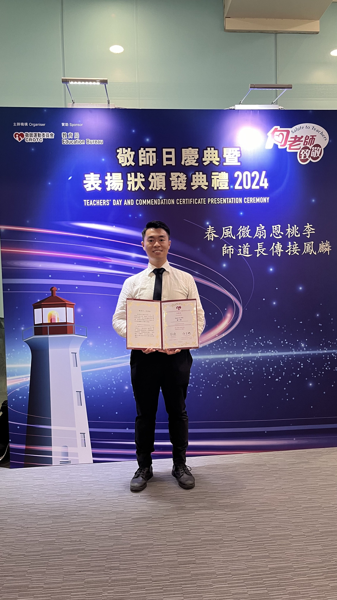
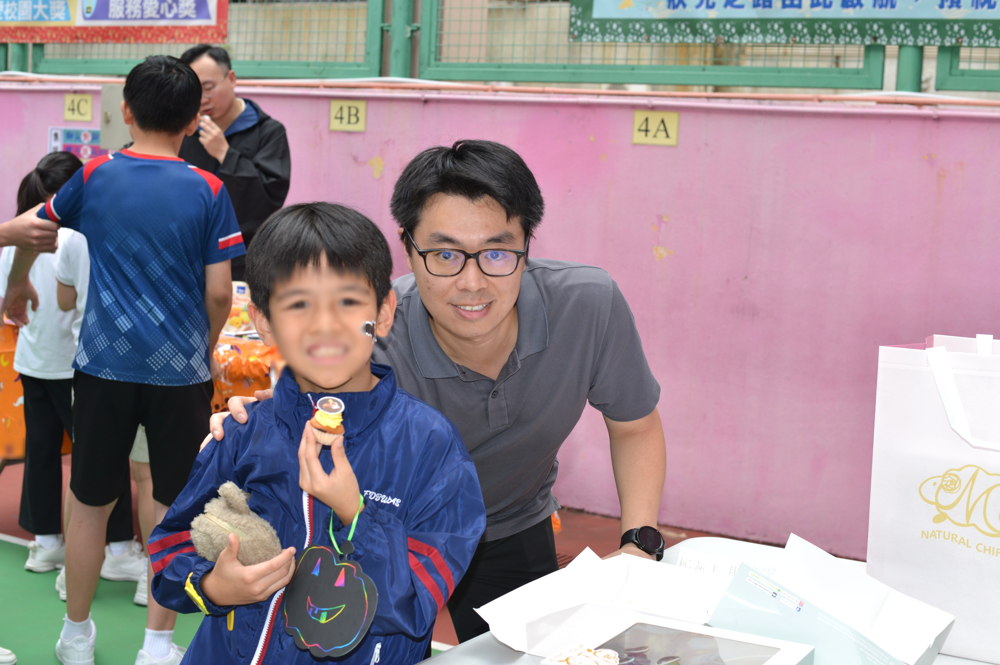
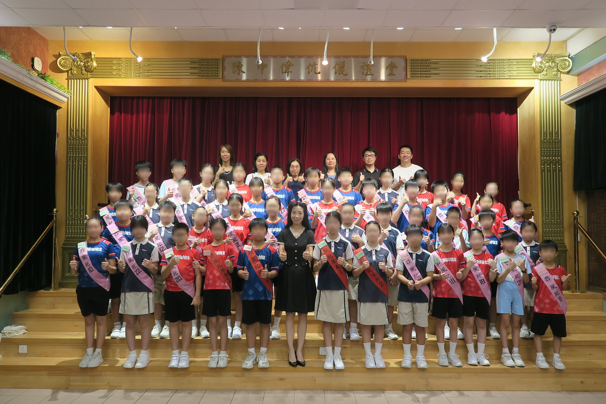
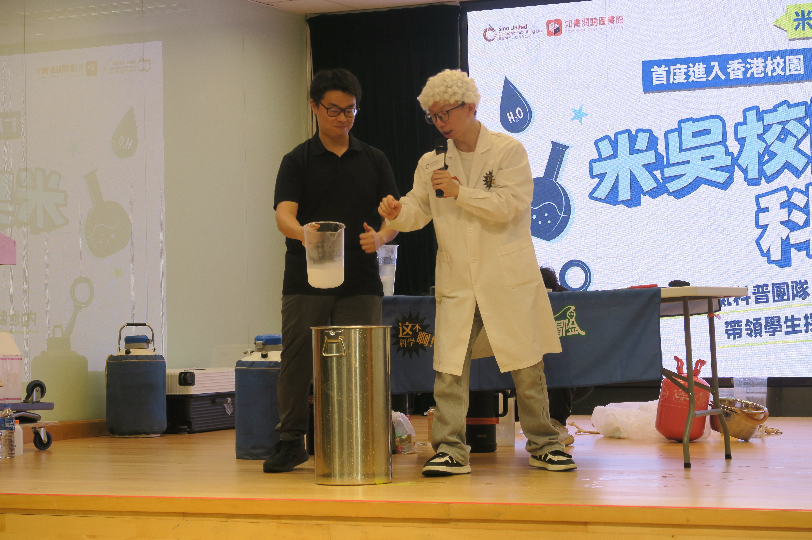
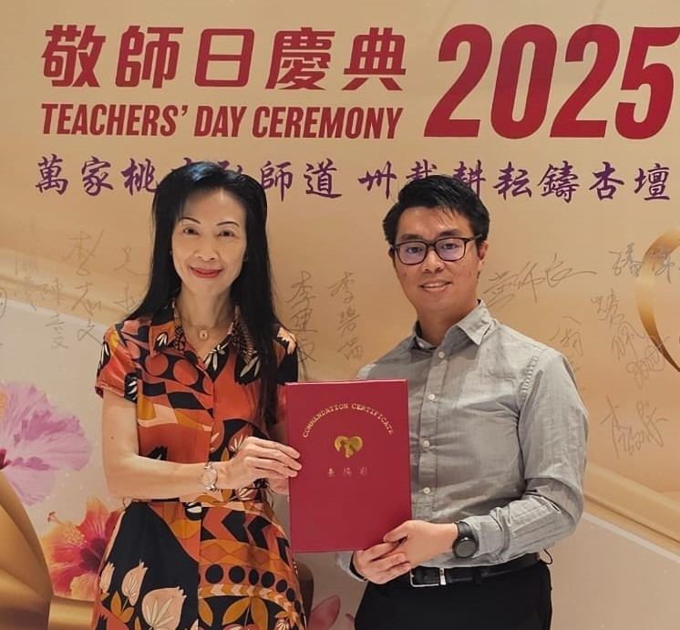
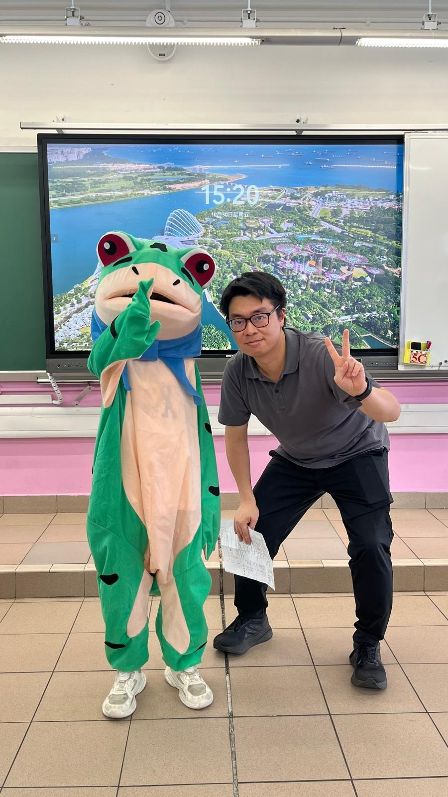
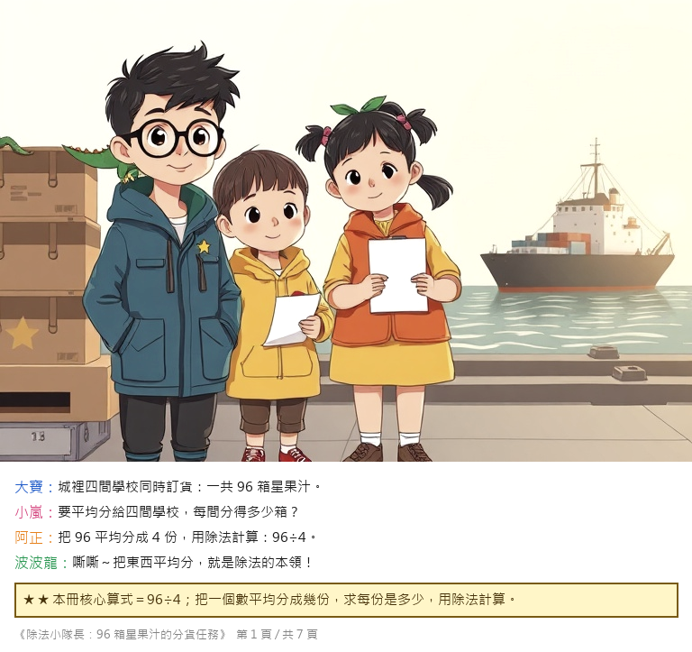
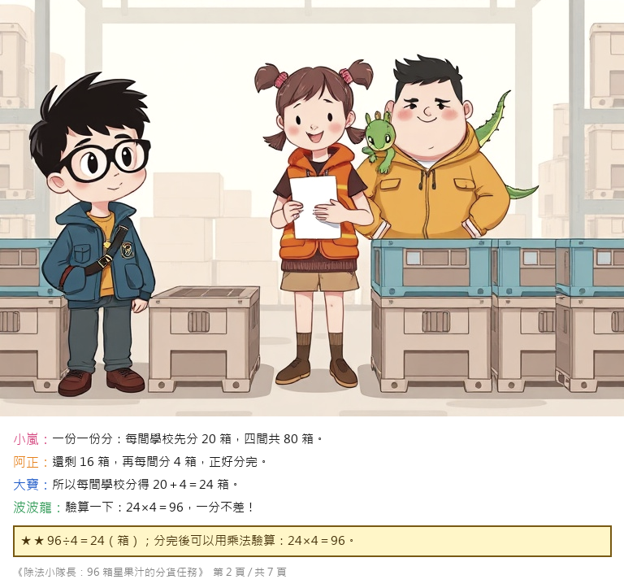
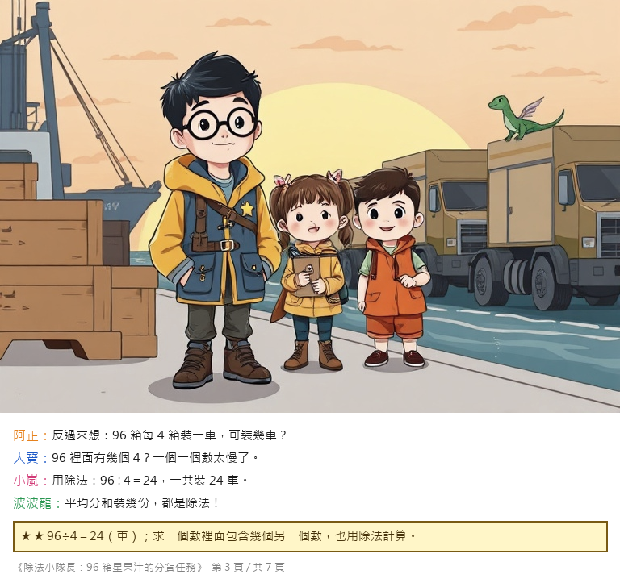
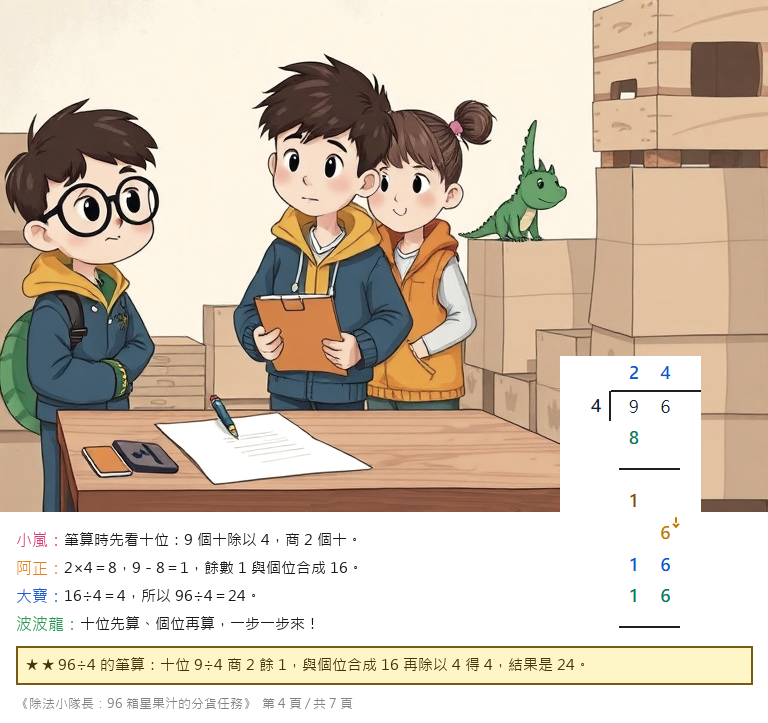
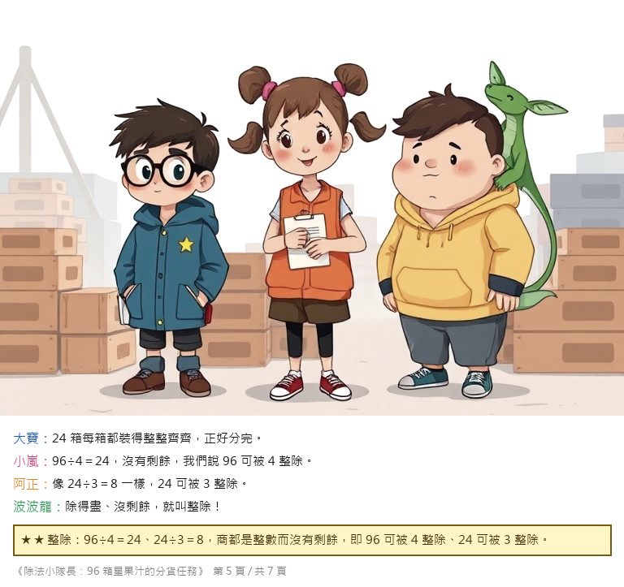
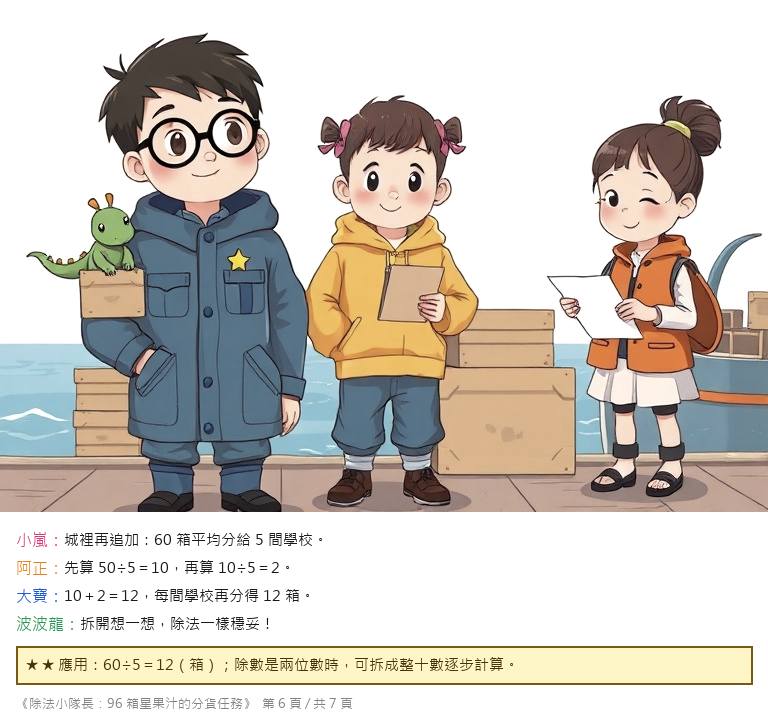
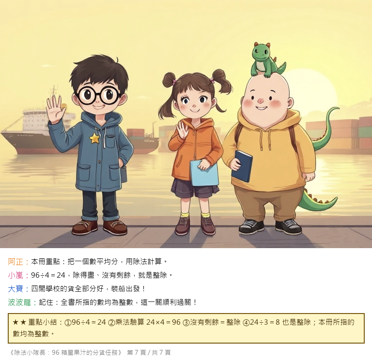
數學小遊戲（自製）：
求職面試，歡迎電郵聯絡。